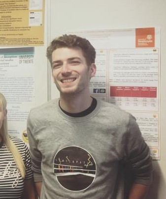

My name is Ryan Smith, and I am a postgraduate student in the University of Glasgow’s Institute of Neuroscience and Psychology. There, I am currently working with Dr. Maxine Swingler investigating the mental representation of food in stored eating simulations, and how these simulations influence the motivation to consume different types of food.
Full copy of my cv can be found here
Institutions
- University of Strathclyde
- Graduated in 2018 with a 2:1 in BA Psychology
- University of Twente
- Took part in an Erasmus funded research internship in summer 2017
- University of Glasgow
- Currently enrolled in Msc Research Methods in Psychological Science
Research interests
- Cognitive Psychology
- Psychology of Eyewitness Testimony
- Eating Regulation and Behaviour
- Social Psychology
- Deception
- Sexual Harassment